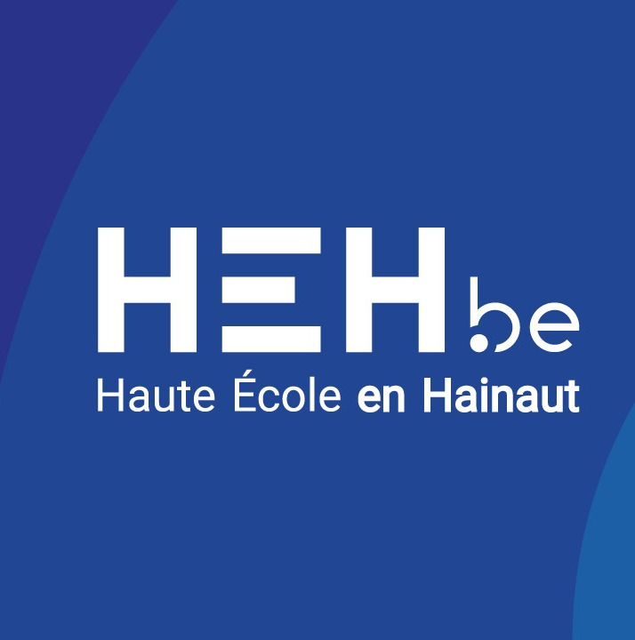

Profil
Étudiant en Master Ingénieur Industriel orientation Informatique à la Haute École en Hainaut, je suis actuellement à la recherche d’un projet de fin d’études (PFE) me permettant de mettre en pratique mes compétences. Autonome et motivé, j’ai déjà acquis une première expérience professionnelle lors de mon stage chez EpiCURA. Je suis particulièrement motivé à l’idée de m’investir dans un nouveau projet au sein d’une entreprise dynamique.
Expérience

Stage IT — EpiCURA (Hornu)
Février 2024 - Mai 2024
Gestion des accès externes via une solution Azure Virtual Desktop
Études

Master en sciences de l'ingénieur industriel orientation Informatique, option Intelligence artificielle et Big Data
Haute École en Hainaut
2024 — ****
Bachelier en Informatique & systèmes orientation réseaux & télécommunications, option sécurité
Haute École en Hainaut
2021 — 2024
Spécialités IT
Security
Docker
Cisco
Fortinet
React
C++
React
Azure
Python
HTML/CSS
PHP/MySQL
Linux
Langues
Français : Langue maternelle
Anglais : Niveau B2
Loisirs
Sport
Films et séries
Voyages